Set up the VMS/XDE Lab environment
Start the workshop container, open it in the browser and connect Claude Code. You do this once, at the start of the workshop; every task builds on it.
1 · Introduction
The whole lab runs in one container on the computer in front of you: OpenVMS x86 on VMS/XDE, a VS Code editor in your browser, and Claude Code next to the editor. Nothing else is installed on the computer, and only Claude Code connects to the internet.
Then go to your task: each task guide starts with its own short setup.
G1 · Start the container
You load the workshop image into Docker once and start the container with xde.sh. How you start it depends on how you use Claude Code.
-
Open a bash terminal on the computer itself:
- Windows: start WSL2: open Ubuntu from the Start menu. A window opens with a bash prompt in Linux.
- Linux: open a terminal window.
This guide calls it the host bash: bash on the computer, outside the container. It has Docker and
xde.sh. The bash terminal you open later in VS Code runs inside the container and has the OpenVMS tools instead, so the two are not interchangeable. All commands in this part are typed in the host bash. -
Copy
xde.shfrom the USB stick into a folder of your own. On Windows the stick appears in Ubuntu under/mnt/with its drive letter:/mnt/dfor driveD:. Replace/mnt/dwith your stick's folder.mkdir -p ~/xde-workshop cp /mnt/d/xde.sh ~/xde-workshop/ cd ~/xde-workshop
-
Load the workshop image into Docker. It first checks the file against
SHA256SUMSon the stick, then unpacks the image; this takes a few minutes and is needed only once. Skip this step if the image is already loaded, as on computers prepared by the organizers:docker image ls xde-fullthen already lists it.bash xde.sh load /mnt/d/xde-full.tar.zst
Checking xde-full.tar.zst ... Loaded image: xde-full:latest
If it reports … is damaged - copy it again or use another stick, the file on the stick is broken: ask an organizer for another stick.
-
Start the container. There are two ways, depending on how you use Claude Code: choose either option A or option B, not both.
Your Claude access Option A key file from the instructor A Your own Claude subscription (Pro, Max, Team or Enterprise) B Your own Anthropic Console account B (sign in), or A with an API key of your own OPTION AWith a key fileThe instructor gives you a file
claude.env; save it in~/xde-workshop. To use an API key from your own Anthropic Console account instead, create~/xde-workshop/claude.envin a text editor with one line,ANTHROPIC_API_KEY=followed by your key. Start the container with--claude-key: the container then uses that key, and Claude Code needs no sign-in.bash xde.sh start --claude-key claude.env
The key stays in your file on the computer:
xde.shhands it to the running container only and never stores it in the image.OPTION BSign in with your own accountStart the container without options. You sign in to Claude Code once, in part G3, with your Claude subscription or your Anthropic Console account.
bash xde.sh start
With either option, the first start installs Claude Code inside the container, which takes about a minute; later starts are faster.
xde.shwaits until VS Code is ready and prints its address:Starting xde-full ... First start: installing Claude Code (about 1 minute) ... Ready. VS Code: http://localhost:8080 (password: lab) OpenVMS: user XDEWS
Later starts reuse the same container, with your work in it: run the same command again, or just
bash xde.sh start. It takes a few seconds and skips the installation line:Starting xde-full ... Ready. VS Code: http://localhost:8080 (password: lab) OpenVMS: user XDEWS
bash xde.sh start --port 8081 (add --claude-key claude.env for option A), and use that port in the browser address. bash xde.sh --help lists all options.At the end of the day, or if everything hangs. Three commands in the host bash stop the container; your work stays in it with all three, and bash xde.sh start brings it back as you left it.
| Command | When | What it does |
|---|---|---|
bash xde.sh stop | At the end of the day | Shuts OpenVMS down cleanly, then stops the container. If the shutdown hangs for 20 seconds, it switches to --force by itself. |
bash xde.sh stop --force | Everything is stalled: VS Code or OpenVMS no longer answers | Stops VMS/XDE at once, then the container. |
bash xde.sh restart | Something misbehaves and you want a clean start of the same container | Stop, then start. Add --force if it is stalled. Reload the browser tab afterwards. |
Stopping xde-full (VMS/XDE shutdown, up to 20 s) ... Stopped. Your work in the container is kept: xde.sh start
If OpenVMS does not shut down in 20 seconds, stop adds VMS/XDE did not shut down. and Stopping VMS/XDE in xde-full by force ... before Stopped.; stop --force prints only the force line. restart prints the stop lines, then the same Starting xde-full ... Ready. lines as start. OpenVMS itself starts again with the first xdecli command or DCL session.
Only reset (below) deletes your work.
Other settings or a fresh start. The container keeps the settings of its first start: its port and, with option A, its key. To change them, for example to switch from option B to option A, delete the container first and start again with the new options:
bash xde.sh reset
reset asks before it deletes: type yes to confirm. It deletes everything done in the container: task files on its VMS/XDE disks, Gitea repositories and the runner, git settings and the Claude Code sign-in. The image stays loaded and your claude.env stays on the computer, so the next start is a first start again, with the Claude Code installation. If you try new options without reset, xde.sh refuses and tells you what to do.
bash xde.sh status in the host bash prints xde-full is running. and the VS Code address.G2 · Open VS Code
VS Code runs inside the container; the browser on the computer shows it. You sign in once, then the VMS/XDE Lab start page opens.
-
Open a new tab in the browser and paste this address into its address bar, then press Enter. It is the address that
xde.shprinted; if you started with another--port, use that port instead of 8080.http://localhost:8080
The VS Code sign-in page opens. Type the password
laband click Submit.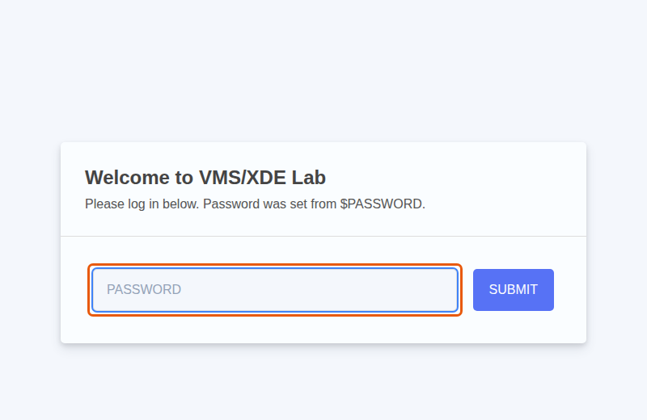
-
The VMS/XDE Lab start page opens. It shows your OpenVMS user name, XDEWS, the workspaces of the tasks, and buttons for the most common VMS/XDE actions.
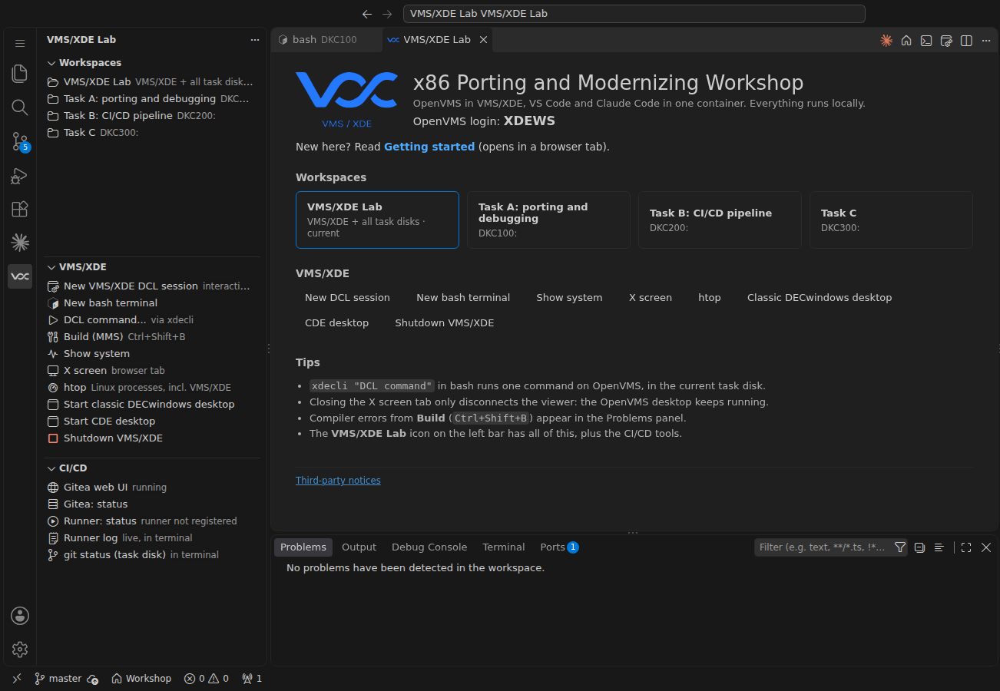
The line New here? Read Getting started under the title opens this guide in a browser tab, so you can come back to it at any time. The task guides open the same way.
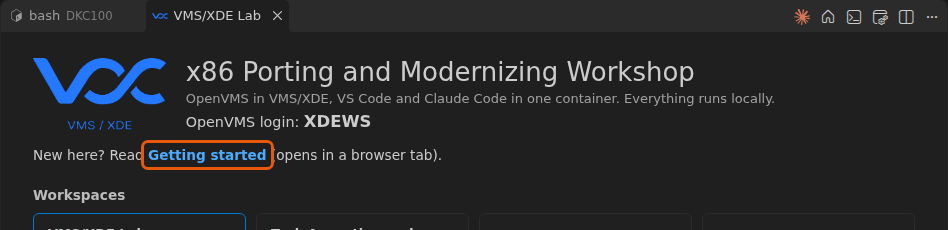
-
Get to know the window. Everything you need during the workshop is in three places:
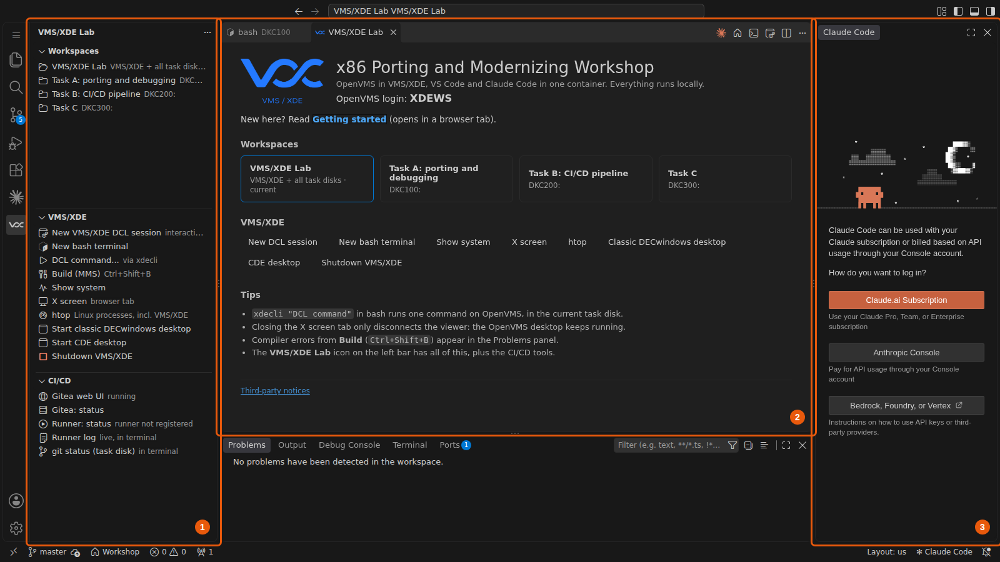
Where What it is for 1 VMS/XDE Lab side bar, left Workspaces switches between the tasks; VMS/XDE opens terminals, DCL sessions and the X screen; CI/CD is used in Task B. The VMS/XDE Lab icon on the far left brings this side bar back at any time. 2 Editor area, middle Files, the start page and terminals open here as tabs. 3 Claude Code, right Your AI assistant. It opens about 10 seconds after the rest of the window. You connect it in part G3. -
OPTIONALLook at the OpenVMS screen: in the VMS/XDE view click X screen. It opens in a separate browser tab and stays empty until an OpenVMS program draws on it, for example a DECwindows desktop. Return to the VS Code tab when you have seen it.
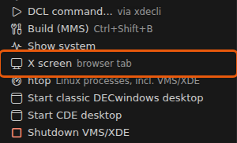
G3 · Connect Claude Code
Claude Code is the AI assistant in the right pane. It reads the files of your task, runs commands such as xdecli, and explains or changes code when you ask. You connect it once; then you type requests in its prompt box.
-
Find the Claude Code pane on the right of the window (frame 3 in part G2). If it is closed, click Claude Code in the status bar at the bottom right to open it again.
-
What the pane shows depends on how you started the container in part G1:
If you started with The pane shows Next Option A, a key file The prompt box Ask Claude to edit… at the bottom, ready to use Go on with step 4. Option B, sign in with your own account How do you want to log in? Sign in once, step 3. 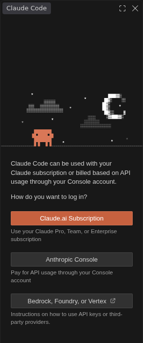
-
Option B only: sign in. Choose the button that matches your account:
Button Choose it if Claude.ai Subscription You have a Claude Pro, Max, Team or Enterprise plan. Anthropic Console You use your own Anthropic Console account, billed for API usage. 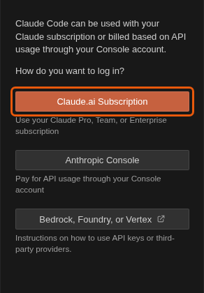
Claude plan 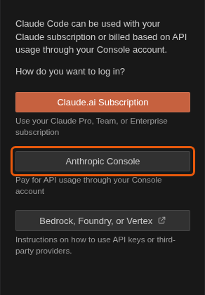
Console account A new browser tab opens the Anthropic sign-in page. Sign in as you normally do and allow Claude Code access. Then return to the VS Code tab: the pane now shows the prompt box. You sign in only once; the container remembers it until it is removed.
Bedrock, Foundry, or Vertex is for company cloud accounts and is not supported in this workshop.
-
The pane is ready when it shows the prompt box Ask Claude to edit… at the bottom. A notice card may appear above it, for example about the model; close it with its ×.
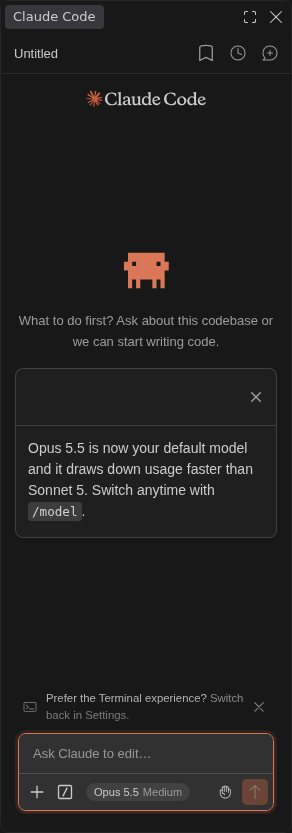
-
Ask your first question. Click into the prompt box at the bottom of the pane, type or paste the request below, and press Enter.
Which OpenVMS version runs in VMS/XDE here? Check it with xdecli.
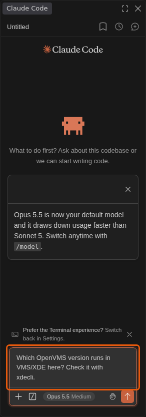
Claude runs
xdeclito ask OpenVMS and answers in a few seconds. Each command it ran is shown in the conversation as a Bash block with its input (IN) and output (OUT).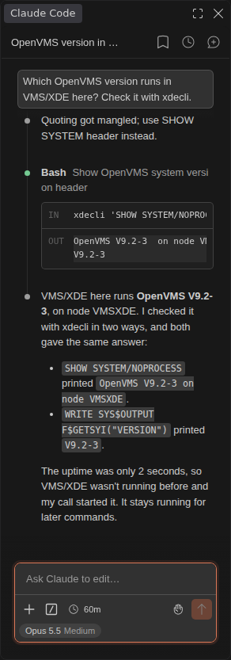
An example answer. Claude words it differently each time; the version is the same. -
Decide what Claude may do. Reading files, running
xdecliand read-only commands such aslsorgrepare allowed in this lab. For anything that changes something, Claude first asks you. Try it:Create an empty file /tmp/hello.txt with touch.
Claude shows the command it wants to run and waits for your answer:
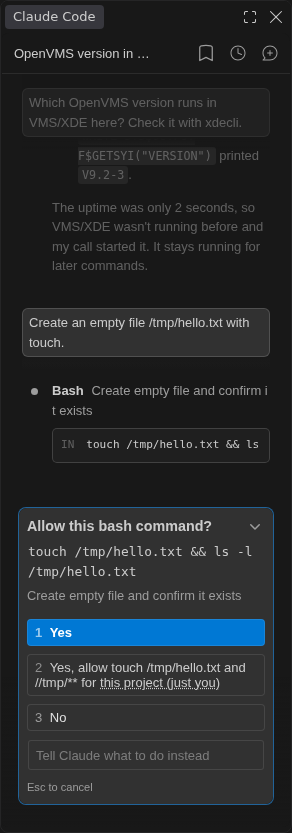
Choice What happens 1 Yes Claude runs this command once. 2 Yes, allow … Claude runs it and does not ask again for this kind of command in this project. 3 No Claude does not run it. Tell Claude what to do instead Type another instruction; Claude does not run the command. Choose 1 Yes: click it, or press Enter because it is selected. Claude runs the command and reports the result.
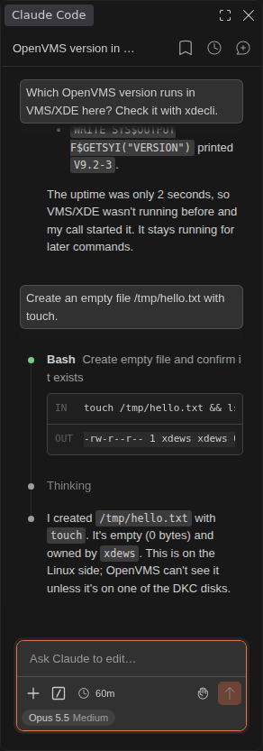
Look at what Claude wants to run or change before you allow it: you stay in control.
G4 · Terminal and git
You open a terminal inside the container, run a first OpenVMS command from it, and tell git who you are. The tasks use both kinds of OpenVMS access shown here.
-
Open a terminal: in the VMS/XDE view click New bash terminal. It opens as an editor tab, in the task disk
/opt/xde/vms_os/V9.2/DKC100.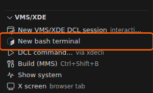
This guide calls it the bash terminal. It runs inside the VMS/XDE container, next to OpenVMS, unlike the host bash of part G1, which runs on the computer itself. Wherever a guide says bash terminal, it means this terminal in VS Code; the tasks' commands are typed here.
-
Run a first OpenVMS command.
xdecliruns one DCL command on OpenVMS and prints its output; the current bash folder is the OpenVMS default directory. Single quotes keep bash away from DCL characters such as$.xdecli 'show default' xdecli 'show system/noprocess'
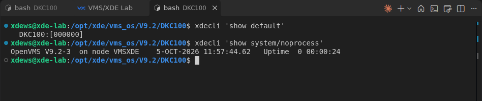
The Linux folder /opt/xde/vms_os/V9.2/DKC100is the OpenVMS diskDKC100:.The first command after a start also starts OpenVMS, so it takes a few seconds longer.
-
Tell git who you are. Every commit records an author; without a name and e-mail
git commitrefuses with Author identity unknown. The values are only labels for this workshop.git config --global user.name "Workshop Participant" git config --global user.email "participant@workshop.invalid" git config --global --list | grep user
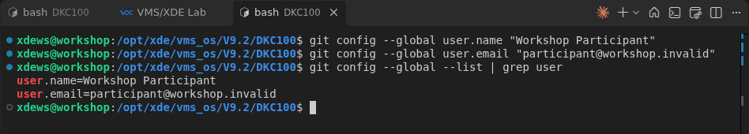
-
OPTIONALOpen an interactive OpenVMS session. Some work needs a real terminal session that keeps its state, for example the OpenVMS debugger. In the VMS/XDE view click New VMS/XDE DCL session; at Username: type
XDEWSand press Enter.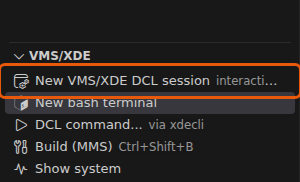
At the
$prompt, type DCL commands as on any OpenVMS system:show time logout
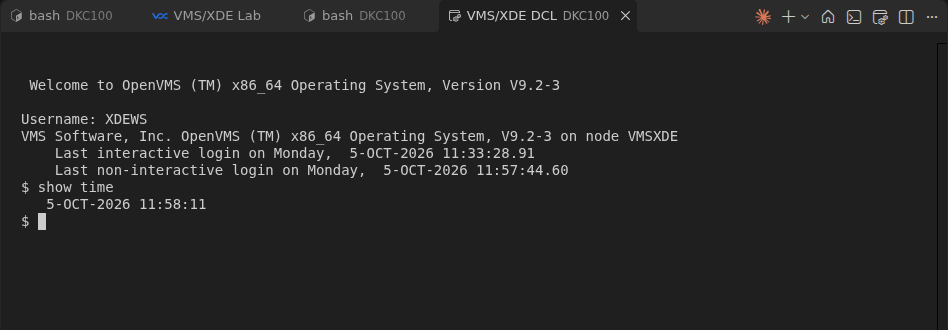
logoutends the session; closing its tab does the same. OpenVMS itself keeps running.
| To run | Use | State between commands |
|---|---|---|
| One DCL command, a build, a test | xdecli in the bash terminal | None: each call is a fresh OpenVMS login |
| Several steps that depend on each other, the debugger | VMS/XDE DCL session | Kept until logout |
xdecli 'show system/noprocess' printed the OpenVMS version, and git config --global --list shows your user.name. You are ready for your task: open its workspace in the Workspaces view and follow its guide.G5 · Claude Code: pane or terminal
Claude Code runs in two places: the pane on the right, which you used in part G3, and a bash terminal, where you start it with the command claude. It is the same Claude with the same sign-in and the same rules; only the controls differ. Each task guide says which one it uses: Tasks B and C use the pane, Task A the terminal.
The terminal is useful when Claude should work in one project folder: it works in the folder you start it in, and reads that project's own settings and skills from there. The pane works in the workspace folder that VS Code has open.
| Pane | Terminal | |
|---|---|---|
| Open it | The pane on the right; if it is closed, Claude Code in the status bar | In a bash terminal: cd to the project, then claude |
| Works in | The workspace folder | The folder where you started it |
| First start | Sign-in only (option B of part G1) | A few one-time screens: text style, security notes, terminal setup, and Is this a project you created or one you trust?, where No, exit is selected first: press ↓, then Enter, for Yes, I trust this folder |
| Ask | Type in the prompt box, Enter | Type at the ❯ prompt line, Enter; Shift+Enter starts a new line |
| Permission question | Allow this bash command?: click 1 Yes, 2 Yes, allow … or 3 No | Do you want to proceed?: 1. Yes is selected, Enter allows it, Esc cancels |
| File change | Allow write to …? in the pane | Do you want to create …? (or …make this edit…?); the change also opens as a tab in the editor |
| Stop a running answer | The stop button in the prompt box | Esc |
| New conversation | The speech bubble with + at the top right | /clear |
| Leave | Close the pane | /exit |
The same actions side by side
Left the pane, right the terminal.
Ready for a request. Pane: The pane: the prompt box Ask Claude to edit… at the bottom. Terminal: The terminal: the ❯ prompt line, manual mode on below it.
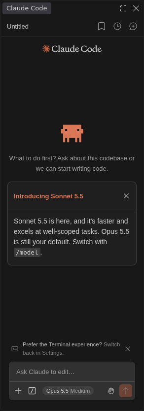
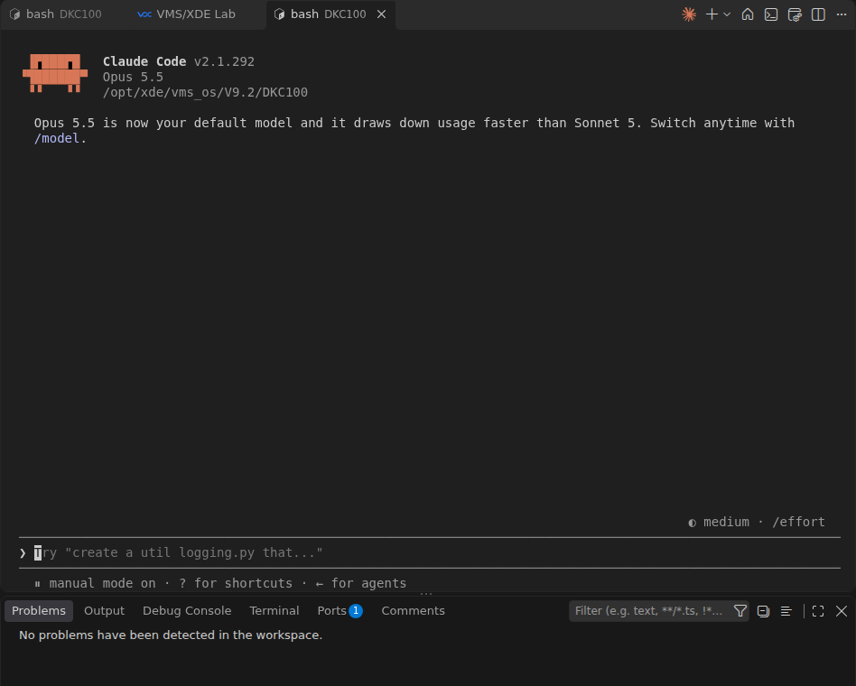
A command that changes something. Pane: Allow this bash command? with 1 Yes, 2 Yes, allow …, 3 No. Terminal: Do you want to proceed? with 1. Yes selected; Enter allows it.
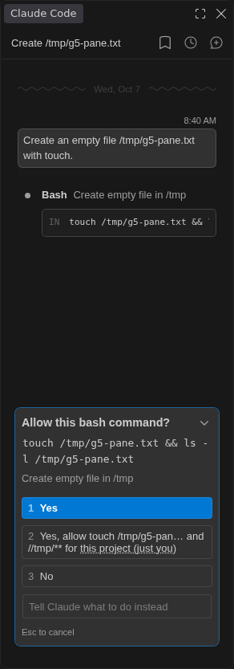
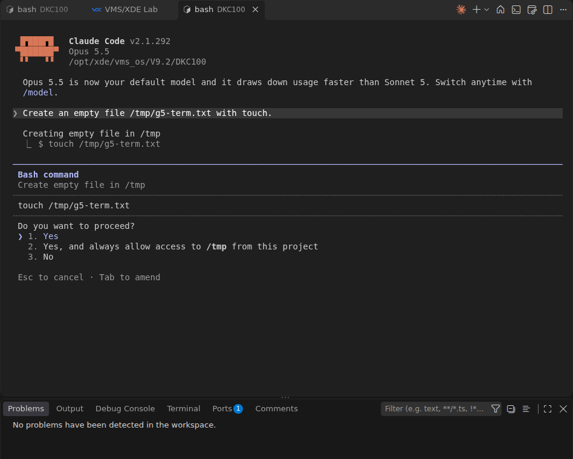
A file change. Pane: Allow write to …? in the pane. Terminal: Do you want to create …? in the terminal; the change also opens as a tab in the editor.
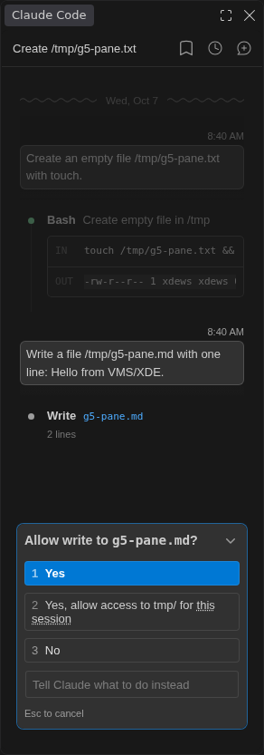
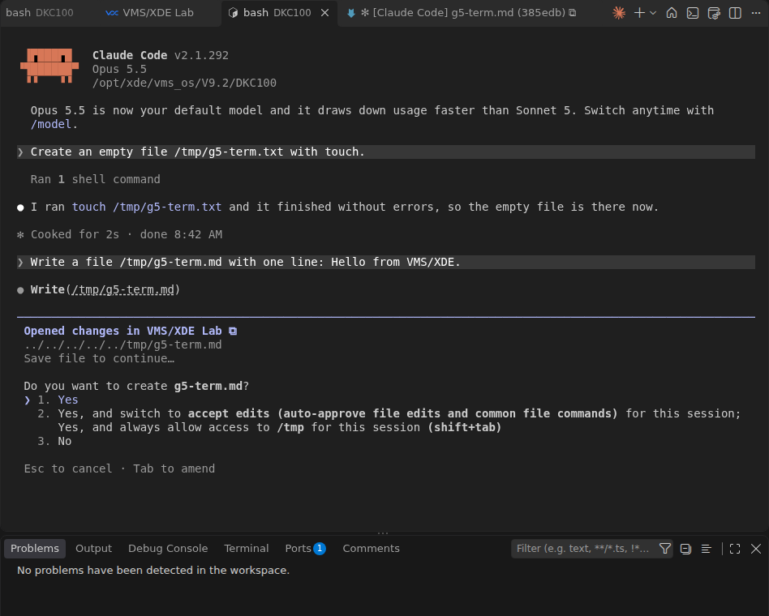
While Claude works. Pane: The stop button (orange square) in the prompt box stops it. Terminal: esc to interrupt at the bottom: Esc stops it.
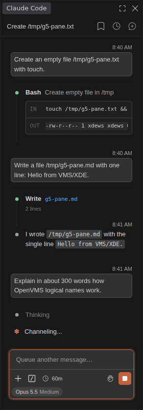
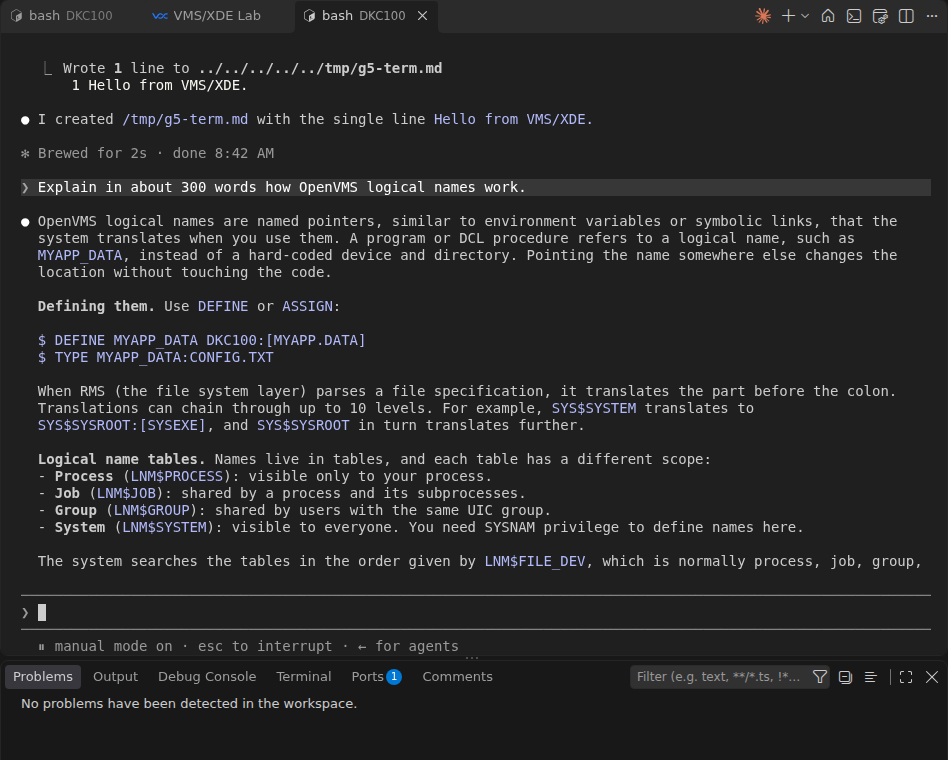
Shared by both: the sign-in, the rules (Claude asks before commands that change something; xdecli and read-only commands run without asking) and the model. Not shared: conversations. A conversation in the pane does not appear in the terminal, and the other way round.
claude in the task folder shows the one-time screens; answer the trust question with ↓ and Enter.